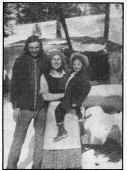

Squaw Creek
Report from rural Washington state, including moving and establishing a homestead in the dead of winter.
By the Mother Earth News editors
November/December 1975
North-central Washington State-a mountainous area with a normal growing season of 70 days, where frost can strike any day of the year, where summers are hot and dusty and winters are supposed to be killers-may not seem like the ideal homestead site . . . particularly when one's only shelter consists of a huge tent. Nevertheless, my family of five came through our first year on the land with grace and good, positive feelings. Here's how we managed.
I'll admit right at the start that the middle of winter is not the most appropriate time to move everything you own onto some raw acreage two miles from the nearest backroad. Still, it can be done. Five years of preparation and hard work-with a wide variety of tools and people, in all kinds of situations-began to pay off on March 1, 1974, when my partner and I negotiated a fully loaded 2-ton flatbed to within a quarter mile of our property and began to haul the necessary materials across the snow on a 4' X 8' sheet of plywood. Yep, it can be done . . . but if you have a choice in the matter (we didn't), it's better to wait for spring.
Our first shelter-a frame of 2 X 4's set in a stand of trees and swathed in clear 4-mil plastic-took only a few hours to build. The covering held the heat of the wood cookstove well enough to maintain an indoor temperature in the mid-60's as long as the fire was going. It also rattled like mad in even the slightest breeze, afforded a 100% view that took some getting used to, and was shortly succeeded by a canvas-covered pole framework. Or, rather, by three such structures . . . since my wife and children soon arrived, closely followed by my brother and his wife. We owned four big canvases among us, and every family or unit bad fun building a private shelter.
In spite of its drawbacks, though, our earliest home did serve us very effectively and we decided to experiment further with the idea. Come the first week of May, we turned (by hand) a patch of ground 50' X 10' and erected a frame for a temporary greenhouse. The new structure faced south, stood 5 feet high at the back and 2 at the front, and was covered with more clear plastic-6-mil this time-which we placed over the frame on a fine sunny day. Then we buried the edges of the film . . . and within 15 minutes the building's interior temperature rose to 110° F. The problems of overheating and ventilation were solved by arranging the two narrow ends to open and close as needed. Last-and this should really have been done first-we dug a trench 2 feet deep lengthwise down the middle of the greenhouse, to serve as a walkway and allow a little head space without an unnecessarily high roof.
Frost continued nightly right up until June. . . but not in the greenhouse. Although nighttime temperatures under the plastic weren't really warm, they never dropped to freezing. With this three-week head start we actually harvested tomatoes from seed planted outdoors (unheard of in our area, with its 10-week growing season).
A note on building with plastic: The best way to nail down such a covering is to fold the edges over three or four times and then sandwich the extra thickness between the frame of the structure and a smaller, lighter stick of wood. Then, once you've worked all around the outside, you'll probably want to add a few reinforcing strips in the middle of the wall so that the whole section doesn't billow in and out in the wind.
I do feel it necessary to say that-although plastic worked wonderfully well for us-its life span was short. After a long, hot summer and a couple of hard fall frosts, the greenhouse pretty much disintegrated and-when we tried to roll up a sheet of film for storage and it broke, cracked, chipped, and blew all over two sides of the mountain-we knew glass was for us. True, we could probably have taken better care of the material, and I'm aware that researchers are constantly trying to develop more resistant, longer-lasting plastics. As it is, though, the material is too expensive, too hard to dispose of, and generally too much of a luxury (and anyhow, we were never really happy about using so much of a petroleum-based product).
In addition to the two plastic shelters, six temporary and four permanent structures were built on our land that first year. In several cases it seemed worthwhile to begin by digging a hole anywhere from 2 to 4 feet deep, and to erect the building around the dug-out area. The wall of the hole was then lined with rock or wood, and we proceeded to make a floor of hard-packed dirt, rock, plywood, pine puncheons, or straw (my favorite). This saved us the cost of material for floor joists, subfloors, and sometimes main floors-plus part of the walls-and also eliminated some insulation problems. If you try the same method, just be sure not to dig your hole in the bank of a river or inside a natural bowl or trough where water is likely to collect (or you'll find yourself with an indoor swimming pool every spring).
Our next construction discovery came shortly after a logging company massacred the far side of our mountain, leaving 10 years' worth of precut firewood and raw material: Poles, we found out, work just as well as boards or lumber in most instances. When I did need a flat surface on one of the timbers, I managed near-perfect fits by planing, adzing, or axing out what I wanted . . . and tree trunks ended up serving as walls and roofs, doors and window frames, furniture, shelves, and everything else. Peeled and properly seasoned, poles have a very special beauty which some would call primitive or crude and others natural. In any case-once again-I had little choice: I used what was available.
What with all this activity going on, it took me a while to recognize an unfortunate development which was taking place right under my nose. Would you believe a population problem?
This adventure began, you'll remember, with just my partner, my family, my brother, and his wife . . . and that was as large as we ever intended the group to be. I'd lived in enough communes to be basically down on them. Community was what I had in mind, and three households were fine for a start.
Just where the idea went wrong I'm not sure . . . but before summer had arrived, friends began to. And then friends of friends. And visits stretched into weeks.
I was generally too busy to notice. . . until the June day when I took a nose count and found 26 "friends" living in lean-tos, tents, tree houses, sleeping bags, and caves! I promptly called a meeting and asked for an immediate dispersal into the surrounding national forests. After all, that's what the recreational areas were there for.
Naturally, the most conscientious visitors-those who had always been the first to lend a hand when it was needed-were also the first to leave. That left me with more than a dozen irresponsible individuals who couldn't even take a hint. The whole trip was a super drain, the one bad mistake we made all year. If you're smart, it won't happen to you (unless you want to live like that).
The departure of our surplus people left us free to get on with the serious business of "laying in" food . . . and we spent most of the summer and fall growing and harvesting a good supply and socking it away for the winter.
In the process, we learned a good deal about gardening in our area's rigorous conditions. For example--since summers here always turn to dust sooner or later-I experimented with dust mulches and enjoyed quite a bit of success. The trick seems to be to till fairly deeply before planting to allow deep penetration of roots, air, and water, and to cultivate heavily and frequently as the summer goes on to keep the dirt loose and the weeds down. While surrounding soils (where the surface face hadn't been broken) were sometimes dry to a depth o? over a foot, I never had to go deeper than 2 inches to find dark, moist earth wherever I had kept the upper layer loose and well worked. This held true even in places I hadn't watered artificially (and our rainfall here is supposed to average only 11-1/2 inches per year).
By the way, here's a tip for those of you who keep live stock and have enough room for two garden areas: Try fencing both plots, growing your crops on one, and corralling your animals on the other. Then rotate the pen and the garden each year. The only drawback to this system is that perennials and seed plants have to be located in a third patch.
Necessity led us to some practices that probably wouldn't be approved by agricultural experts. When it came time to harvest our grains, for instance, I wasn't available (I was picking apples) and neither was a combine . . . so my son mowed all the fields-as if for hay-with a horse-drawn John Deere No. 4 cycle mower, raked the straw by hand, and hauled it in a cart (also pulled by horses) to our stacking area. Of course, many of the heads were broken in the process and the grain scattered on the ground . . . but, rather than feel bad about the waste, I decided to consider the fields sown to a green manure crop for the following year. Accordingly, I went over the ground lightly with a harrow and left it at that.
One major source of food was a crop we neither grew nor paid for: unwanted orchard fruit. Shoppers, for some reason, prefer Delicious apples to the old favorites that keep so well in root cellars, and many local orchardists grow traditional varieties for pollinization purposes and leave them to rot on the trees. Whenever we traveled to town-which wasn't often-we stopped at farm and orchard houses to ask about possible pickings, and gleaned plenty of Johnnies, Macs, and Winesaps. We also inquired about any apricots we saw unpicked after the season should have been over, and wound up canning 160 quarts . . . all free.
Speaking of trips to town . . . our farm is 35 miles from the nearest settlement, and-even though I hoped to have draft horses soon-I filed a form with the Federal Energy Bureau early in our adventure and received permission to buy gasoline wholesale in 55-gallon drums at a saving of 10 cents per gallon. At that time there was a limit on the amount of fuel that could be bought annually in this manner, but I believe that the restriction has been discontinued (along with the filing of the application). Check out the possibility in your area, and-if supplies once again become short-remember that farm vehicles have a high priority. (The president of the local oil jobbers' association informs me that at present any person may buy gasoline wholesale. He adds, however, that most wholesalers in this area can't afford to deliver the, quantities required by the average small farm, and the expense and hazard of transport by the customer-plus spillage and evaporation in handling-partly offset the savings. He also reminds owners of farm vehicle that they may file for a tax rebate on gasoline used off the highway.--MOTHER.)
Meanwhile, the year was getting on and it was time to pry my wife away from the open fire where she'd cooked every meal-three a day-for a family of five over the past eight months. She learned a great deal in the process: to use cast iron or enamel utensils only, for example, and to cook over coals, not flames (which meant that-rather than cordwood-we could burn sticks, branches, and scraps left from a 40-year-old logging operation). Our meals included everything under the sun-from soups, stews, steamed, vegetables and casseroles to yeasted breads, cakes, pies, and cookies-and the head cook became so involved in working over the open fire that I couldn't get her to move inside until just before the first snowfall in the middle of November!
There's an old bugaboo about winters in the far North . . . and it is true that you must have your head together to get through them successfully, but that's about as far as the hardship goes. One proof of this statement is that we found our pole-and-canvas shelter (with a few improvements, of course) perfectly adequate for year-round use. When the cold season began to loom over us I enlarged the structure's framework to cover an area of 400 square feet. Then I insulated the canvas covering with cardboard, moved in the easy chair and rocker . . . and built pole shelves, furniture, and bunk beds. Inside of a week our "tent" was the coziest house in the valley. With all our canned fruit, jars and bottles of food and herbs, bags and bags of grains, seeds, nuts, and beans, our home looked just like a little country store and we never failed to get compliments on it from visitors.
By that time, even our best friends were calling us crazy. Most of them left the valley long before even the tiniest preview of wind and snow had lightly dusted the countryside. Any lingering faith in my sanity was destroyed by the fact that-while they were pulling out-I was still hauling water, 25 gallons at a time, on a toboggan from a quarter of a mile away (a matter of 20 minutes or so daily). The firewood, which I cut entirely by hand, had to be dragged about the same distance-by the horses when possible-and that job took another hour or more each day.
Now I must admit that bringing in the wood definitely did become tiresome, and this year I'm making an effort to get in at least half my winter's supply ahead of time so the job won't be hanging over my head every morning. I'll still have to cut some fuel sooner or later, but that's fine because I like to work outdoors even in cold weather. Still, one local old-timer was right when he told me that anyone who had all his wood in before the first snow had to be a "weekend woodcutter". I must agree with him that-provided you live in a forest of some kind-the old wives' tale about needing an advance supply of 7 to 10 cords in order to survive is nonsense.
To my mind, winter was the most peaceful time of year, even though I spent most of that season working outdoors in temperatures below freezing . . . and sometimes below zero! (I soon learned not to wear leather anywhere on my person, since it always froze and did nothing to keep me warm.) My days were taken up with peeling a lot of logs for future use and building an entire tack and tool shed.
In mid-January, when the temperature dove to 20 below zero, my family snuggled warm and cozy in our shelter. We smiled as we thought of all our friends who had left the valley for the security of life with their parents, at work, or in school. To us, the knowledge that we had a home and were in it was all the security we wanted.
That's all for now. Maybe later I can fill everyone in on how it's gone for us the second time around.
SQUAW CREEK'S SECOND SUMMER
Here we are, about to dig in for another winter after our second busy food-growing season. No two summers are alike, and this year we've run into new problems that taught us more about gardening in our difficult climate. Maybe some of you trying to cope with similar conditions can profit from our experience.
First, a couple of successes: You'll recall that we decided to consider our grainfields sown after our improvised harvesting technique strewed the area with shattered kernels. The broken heads just lay there all winter, while a good two feet of snow fell and the temperature hit 20 below zero. Then the last of the white blanket melted in three days of heavy winds (April 15 through 17). The wheat began to sprout within a few weeks, and looked much thicker-with no work at all-than the crop we had hand-sown the year before. We disced the wheat under, in the middle of June, as a green manure crop. Our present plans are to sow winter rye in the fall, along with a mixture of grass and clovers, for future hay.
Another bit of good news is that the alfalfa and clover we planted last spring-as cover crops with the barley and oats-came on very strong this year . . . perhaps thanks to cool, wet weather (in fact, I'm writing this on August 12 and summer still hasn't really come). We harvested approximately 6 tons of hay off a bit less than 3 acres.
Otherwise, this was a difficult year for gardens. Four nights of hard frost the last week in June got most of the squash and beans. The pole beans and soybeans, though shriveled right to the ground, did come back all by themselves, but by that time it was too late for them to develop. No other crops were affected . . . partly, I think, because I was a confirmed dryland farmer right up until the dust started getting thick in mid-July. At that point I set up my gravity-feed sprinkler and watered on a regular cycle . . . but it's possible that the lack of water earlier in the season made my plants hardy enough to withstand those 26-degree nights.
This year we planted a fifth of an acre in main garden. I started out by covering the area with a heavy mulch. Unfortunately, however, a portion of the mulching materials was leftover wheat and barley which we hadn't hand-threshed during the winter. Big mistake. Believe me, those little seeds were just as viable as the ones that had lain on the ground all winter and produced our green manure crop . . . and they soon grew up to be a real pain in the fingers. We wasted a lot of time pulling weeds and grassy grain, and the more we yanked out by the roots, the more that grew to take their place. Then, at the end of July, 5 inches of rain fell in one night. The weeds-especially the pigweed, which had sprung from seeds in the cow manure I'd dumped on the land-actually doubled their size in a few days and kept on growing until the garden was almost lost. No mulch could be seen under the jungle of wild plants.
In desperation I took off every bit of covering, cultivated heavily, and pulled weeds until you couldn't see a thing except vegetables anywhere in the garden. That cleanup, plus a little daily working of the soil, finally licked the intruders. You won't be surprised, though, to hear that I never replaced the mulch and have little inclination to do so next year.
In contrast, here's the story on an alternate vegetable plot . . . a 50' X 25' area which was planted just as soon as the snow left the ground in April. Since this garden was beyond the reach of the sprinklers, I watered it by hand only once (in order to apply fish emulsion). Such conditions provided a stiff test of the dust mulch method I've described in the accompanying report, and I can only say that it worked beautifully.
Something I tried on another, smaller area worked even better: a dust mulch covered with a light sprinkling of straw. Our land loses most of its moisture to a constant breeze, and the thin covering formed a surface a few inches above the ground . . . just enough to keep the wind from blowing directly across the soil and drying it out. The plot did get parched, believe me, but I'd worked the earth thoroughly and the roots of the crops went deep.
What about results? Well, I swear that there are cabbage plants in that last plot which haven't been watered for six weeks, and they're forming nice heads. The dust is so thick right now that you can't see your feet as you walk along, yet the carrots are 8 to 10 inches long and the turnips had the thickest, biggest, lushest, and darkest green, unserrated leaves I've ever seen. They kept us in greens right up to the day when we stored the roots for winter.
Part of the secret of the third gardens success was certainly the very early planting, six weeks before our area's frost-free date. For a month I covered the little plants with straw almost every night and uncovered them again in the morning of every decently warm day . . . and it really paid off. All the same, I'm sure that in a truly dry year a dust mulch in this area woe have dismal results.
Another bit of progress: With the help of some wood ashes applied about four weeks after planting, we avoided all major problems with bugs and worms (even in the turnips). Now I just have to figure out what to do about grasshoppers, moles, and deer.
Here's one last idea I tried this season, with fantastic re suits: I wanted to raise garlic on our place, but couldn't get any sets until February. That meant spring planting for a crop that usually goes into the ground in the fall . . . and given our short summers, I knew I had to get it out there early.
OK. At the beginning of March I went into the meadow (when no one was looking) and shoveled a sidewalk through 16 inches of virgin snow until the black of the frozen earth showed. Then I snuck the spade back into the tool shed and waited three days, which was how long it took the sun to melt the thin layer of ice on my path and turn the ground to mud.
I returned to the scene at that point and slung the soft dirt very thinly over a 50' X 50' area, until the white snow was a grimy black. After that 10-minute job I left again, this time for four days, while the sun drove the black dirt straight down through the snow and removed the icy substratum. I watched closely, and the day my patch of earth turned to mud I mulched it with hay so that it wouldn't refreeze after dark. (Nighttime temperatures were still hitting 10° F.)
Every day after that I turned a little soil and then remulched it, and the third week in March-with a foot of snow on the ground everywhere except my little hole in the meadow-I planted 25 pounds of garlic . . . some mulched, some not. Four weeks later, the uncovered bulbs were growing faster because the sun warmed the soil every day. (I cheated, of course, by piling hay on the area every night and removing it in the morning.) The mulch on the other bed-which was left covered day and night-didn't let the earth freeze, but it didn't let it heat up either.
Well, it's mid-August now and the garlic-a good lot of it-is 2 inches in diameter. We've been eating it every day, and I figure to have somewhere between 60 and 75 pounds to replant this fall.
If you're wondering why we need such a large crop, it's because my wife and I are involved in the use of herbs . . . both to cure and prevent disease and as sources of vitamins and minerals (to be taken in combination with a healthful diet). Of course, the best healers are sun, fresh air, and clean water . . . but several plants have proved themselves sure-fire remedies for us, and may be useful to others in emergencies.
Pliny lists garlic as a cure for 61 disorders, and we've found it useful against all forms of infection (both internal and external). The same remedy works well when our horses begin to show signs of worms. We cut up one garlic clove per pint of pre-boiled water, steep the tea for 20 minutes, strain it, and mix the liquid with steamed rolled oats. This is then fed to the animals, which have been corralled overnight and which are kept penned until they decide to eat the medicine.
We also find that raw garlic eaten before or during a meal prevents the formation of gas in stomach and bowels (the result of certain combinations of food). Other favorites of ours are alfalfa and comfrey-both of which we regard as wonder plants-and the peppermint that we use as a general pickup and cure for headaches.
Most herbs-which correct causes of illness, rather than symptoms-tend to work much more slowly than the pills and drugs of modern science. An exception is fleabane, a small, purple, daisy-like flower with a yellow center. The plant-a member of the aster family-reaches an average height of 1 to 2 feet, sometimes has multiple flower heads, and is generally the last to bloom in these parts (along with goldenrod). The leaves are lanceolate and connected directly to the main stalk. One cup of tea made from this herb will slow a super-heavy menstrual period in just an hour or two. For other, more severe forms of internal hemorrhage you might drink a cup hourly on the way to the hospital. (A number of plants are called "fleabane" and Ronald doesn't know the botanical name of the species that thrives in his area. Both Meyer's The Herbalist and The Rodale Book of Herbs mention one of the fleabanes-Erigeron canadensis-as a powerful astringent.-MOTHER.
A final note: My wife and I have been slowly adding to our horse herd, and this year we were able to realize a longtime dream with the acquisition of two pure-blooded Arabians, one of them in foal (Salsify, born in July). These animals should have been very expensive-registered stock of good bloodlines costs money-but we were given a special price. A lot of people love us, it seems, and we're certainly not going to forget their kindnesses.
The next few years are going to teach us a lot about breed ing and training. Stud fees are costly now, but there's a stallion in our future. Eventually, we hope, we'll be able to pass on lots of information about these most beautiful of all horses . . . and we've vowed that someday we'll pass on a few horses here and there, too. What goes around comes around. We know.
P.S. The following are the sources of information that have helped us most.
ON FARMING THE SOIL WITHOUT MURDERING IT:
Malabar Farm by Louis Bromfield, paperback edition, Ballantine, 1970, $1.25.
Farmers of Forty Centuries: Permanent Agriculture in China, Korea and Japan by F.H. King, reprint of 1911 edition, Rodale Press, Inc., 1973, $7.95.
ON WOODWORKING, OLD BUT STILL USEFUL TOOLS, AND BUILDING IDEAS: Eric Sloane.
ON HERBS: Take your pick of guides . . . almost all have some worthwhile material.
FOR GENERAL REFERENCE:
Public Works, a collection of government and military publications compiled and edited by Walter Szykitka, Links Books, 1974, $10.00.
The Encyclopedia of Organic Gardening by J.I. Rodale and Staff, Rodale Press, Inc., $12.95.
SPIRITUAL:
The Secret Life of Plants by Peter Tompkins and Christopher Bird, Harper & Row, 1973, $8.95.
Seven Arrows by Hyemeyohsts Storm, paperback, Ballantine, 1973, $4.95.
|
Ron, Joan, and Sunflower, with their 400-square-foot tent. |
 The shelter's kitchen, as it looked in February of 1975. |
 A freshly disced field during Squaw Creek's first spring. |
|
Silvermoon and Shadowflax haul posts to be used in fencing. |
A double-post, zigzag fence, held with barbed wire ties. |
Washing clay for Joan and Sally, with the mercury at 20? |
|
|
|
|